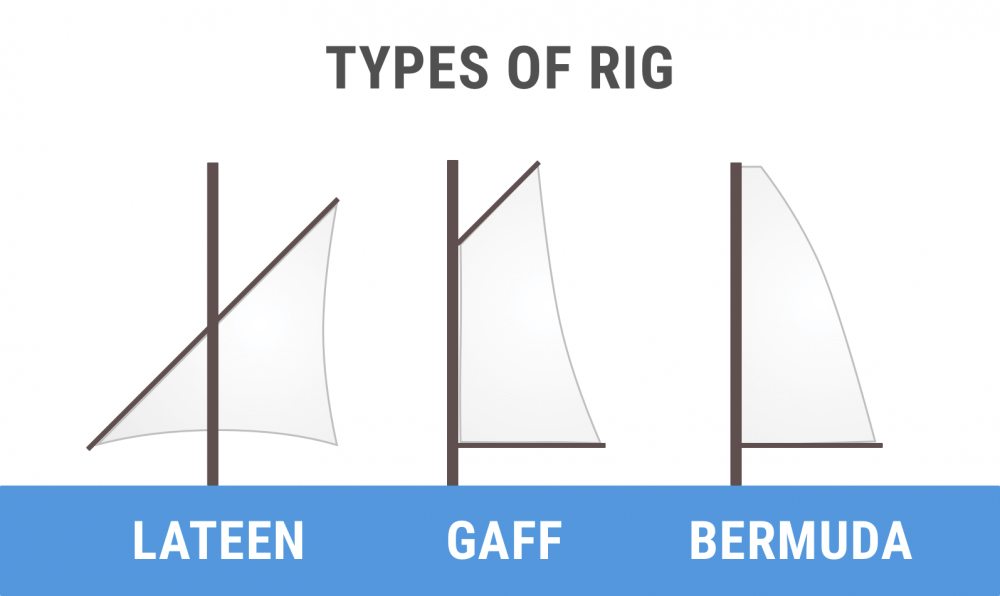
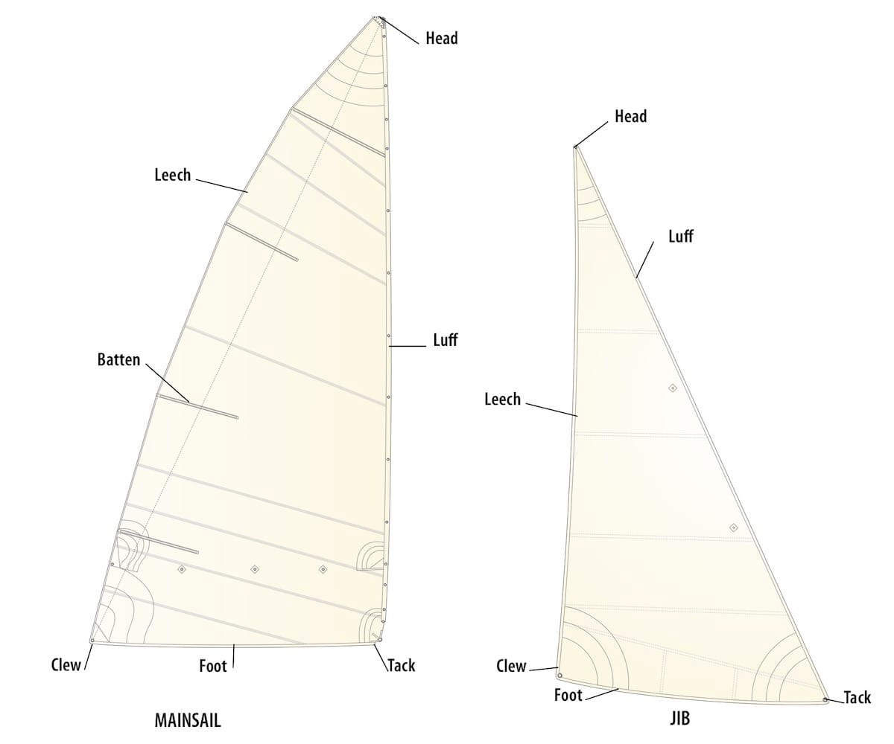
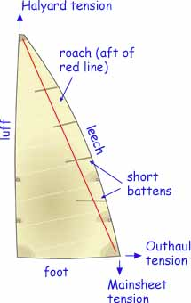
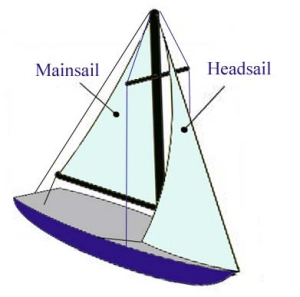

All about Sails#
Sail Plan#
- A sail plan is made up of
mast configuration - refers to the number of mast and where they are plaed
sail type - refers to the sail shape and functionality
rig type - refers to the way these sails are set up on your boat
Common sail plan: Bermuda sloop configuration
Parts of Sail#
Luff - A sail’s forward edge. The luff of the mainsail is usually hoisted up and attached to the mast.
Leech - The sail’s back edge
Foot - The bottom edge of the sail
Tack - Between the luff and the foot is the tack. The tack is attached to the boat or a spar
Head - The corner at the top of the sail between the luff and the leech
Clew - The third triangle of a sail between the leech and the foot
Batten - Solid slats or rods to help maintain the desired airfoil shape
Roach - the area of the sail aft of a line between the head and the clew. It provides a useful incraese in sail area, but i comes at a price - battens
Note
difference between leech and roach
Types of Sail:#
- The main(sail): It has its forward edge attached to the mast
square top raicing mainsail: has a high performance profile thanks to the square top, optional reef points
racing mainsail:
crusing mainsail: low-maintenance, easy to use, made to last. Generally have one or multiple reef points.
full-batten crusing mainsail: cruising mainsail with better shape control. Eliminates flogging. Full-length battens means the sail is reinforced over the entire length. Generally have one or multiple reef points.
high roach mainsail: crossover between square top racing and cruising mainsail, used mostly on cats and multihulls. Generally have one or multiple reef points.
mast furling mainsail: ails specially made to roll up inside the mast - very convenient but less control; of sail shape. Have no reef points
boom furling mainsail: sails specially made to roll up inside the boom. Have no reef points.
The headsail: This is a generic term that refers to any sail that sits forward of the mast.
- Jib - The most common is the jib, The jib gives control over the bow (front) of the ship, making it easier to maneuver the ship.
J1, J2, J3
- Genoa - When a jib is so large that it overlaps the mast it is called a genoa. This increases speed in light and moderate winds
- A genoa is larger than the total size of the fore-triangle. How large exactly is indicated by a percentage
#1 Genoa is 155%, #2 Genoa is 125-140%
- specialty sails
- downwind sails:
- Spinnaker - huge ballon-shaped downwind sail for light airs in downwind
symmetric spinnaker
- asymmetric spinnaker
Gennaker - a combination of a spinnaker and genoa, It has less downwind performance than the spinnaker. It is a bit smaller, making it slower, but also easier to handle - while it remains very capable. The gennaker is a smaller, asymmetric spinnaker that’s doesn’t require a pole or track on the mast.
- light air or reacher sails
spinnaker and gennaker
drifter reacher - versatile light air genoa made from particularly lightweight cloth
code zero reacher - reaching genoa for light air, The code zero reacher is officially a type of spinnaker, but it looks a lot like a large genoa. And that’s exactly what it is: a hybrid cross between the genoa and the asymmetrical spinnaker (gennaker). The code zero however is designed for close reaching, making it much flatter than the spinnaker. It’s about twice the size of a non-overlapping jib
windseeker - tall, narrow, high-clewed, and lightweight jib
- storm sails:
trysail - this is a smaller fore-and-aft (triangular) sail for heavy weather
Storm Jib - a smaller jib meant for stormy conditions